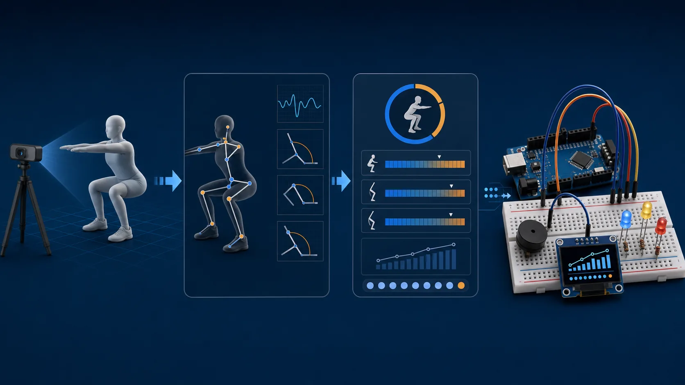

Computer vision + embedded systems · December 2025 to May 2026
Gym Form Trainer
I built a real-time fitness trainer that extracts body landmarks, scores exercise form, counts repetitions, and sends feedback to an Arduino while the set is happening.
- Role
- Independent developer
- Problem
- Exercise feedback needs to arrive during the repetition
- My contribution
- Vision pipeline, form rules, rep state, HUD, C firmware, and serial feedback
- State
- Completed prototype; school-owned hardware kit returned
Working evidence
3 exercise modes

Implemented system
The feedback loop reaches hardware

CameraFull-body landmarks
PythonJoint-angle checks and rep state
SerialForm feedback message
ArduinoLED and buzzer response
Planned revision
A future revision could apply video quality checks and movement analysis to uploaded exercise recordings. This work has not started.